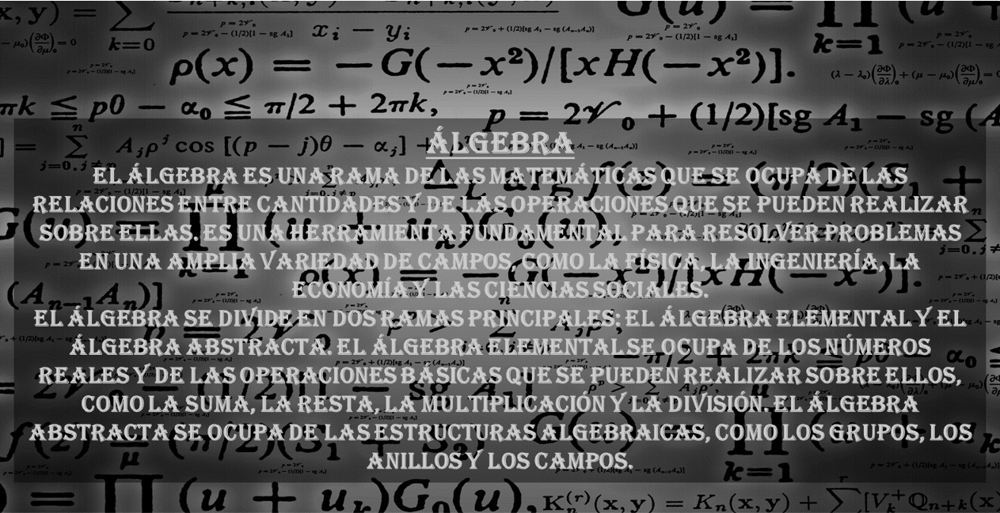
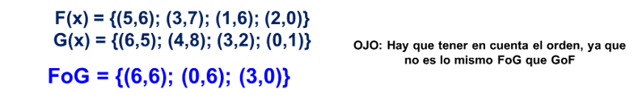

ÁLGEBRA
Productos notables
Proposiciones
Polinomios
Especiales
Operaciones con grados
División
Ley de exponentes
ley de radicales
Radicales dobles
Ecuación lineal
Ecuación cuadrática
Ecuación bicuadrática
Funciones
Tipos___________
Técnicas de graficación
Conposición_______
Función Inversa_______
Logarítmos
Matrices
Tipos de matrices_____
Transpuesta_____
Traza de una matriz____
Determinantes____
Sistema de ecuaciones
Forma del sistema_____
Tipos de sistemas_____
Programación lineal
Límites
GEOMETRÍA
TRIGONOMETRÍA
FÍSICA
QUÍMICA

CONTENIDO
Productos notables
Proposiciones
Polinomios
Leyes de exponentes
Leyes de radicales
Radicales dobles
Ecuaciones lineales
Ecuaciones cuadráticas
Ecuaciones bicuadráticas
Funciones
Logaritmos
Matrices
Determinantes
Sistema de ecuaciones
Programación lineal
Límites
PRODUCTOS NOTABLES
PROPOSICIONES
POLINOMIOS
Puede ser de una o más variables(x,y,z...) y sus exponentes siempre serán racionales enteros positivos
Se pueden presentar como por ejemplo de la siguiente manera
GRADO ABSOLUTO(mayor suma de exponentes de un polinomio) Y GRADO RELATIVO(el mayor exponenete de una variable)
POLINOMIOS ESPECIALES
OPERACIONES CON GRADOS
DIVISIÓN DE POLINOMIOS
PROPIEDADES DE LOS EXPONENTES
PROPIEDADES DE RADICALES
RADICALES DOBLES
1° FORMA
2° FORMA
Se buscan 2 números que sumados me den 8 y que multiplicados me den 15.
ECUACIÓN LINEAL
FORMA: ax = b
1° Si a≠0, única solución (compatible determinada)
2° Si a = b = 0, tiene infinitas soluciones (compatible indeterminada)
3° Si a≠b y b=0, no tiene solución (incompatible)
ECUACIÓN CUADRÁTICA
Solo tiene dos raíces (dos valores que puede tomar x), aunque estos pueden ser iguales
ECUACIÓN BICUADRÁTICA
Tiene cuatro raíces (si por ejemplo dos raíces salen 4 y 5, entonces las otras dos restantes sería -4, -5), aunque estos pueden ser iguales
FUNCIONES
Una función es una relación entre dos magnitudes, de tal manera que a cada valor de la primera (X) le corresponde un valor de la segunda llamada Y.
TIPOS DE FUNCIONES
TÉCNICAS DE GRAFICACIÓN DE UNA FUNCIÓN
COMPOSICIÓN
La composición de funciones es una operación matemática que combina dos o más funciones para crear una nueva función. Se denota mediante el símbolo de composición de funciones, que generalmente es un pequeño círculo (∘) o simplemente escribiendo las funciones una después de la otra.

FUNCIÓN INVERSA
LOGARÍTMOS
MATRICES
TRANSPUESTA DE UNA MATRIZ
La primera columna se convierte en la primera fila, la segunda columna se convierte en la segunda fila y así sucesivamente.
TRAZA DE UNA MATRIZ
TIPOS DE MATRICES
DETERMINANTES
SISTEMA DE ECUACIONES
FORMA DEL SISTEMA
TIPOS DE SISTEMAS DE ECUACIONES
PROGRAMACIÓN LINEAL
Un problema de programación lineal (PPL) consiste en maximizar o minimizaruna función de dos variables de la forma: f(x,y) = mx + ny
EJEMPLO DE PROGRAMACIÓN LINEAL
LÍMITES